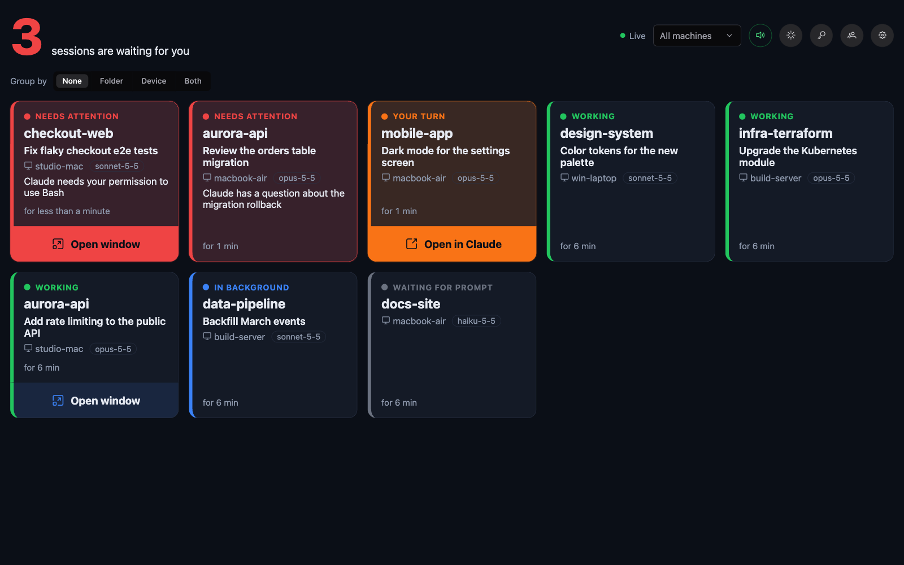
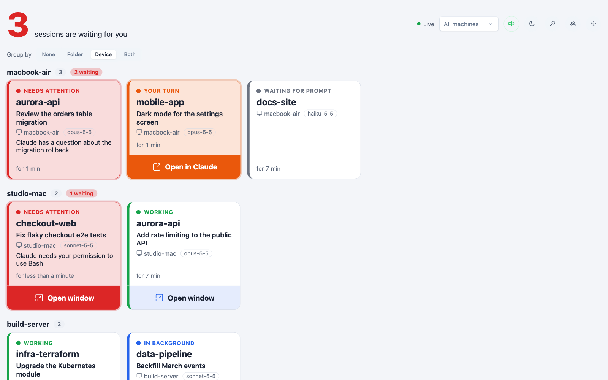
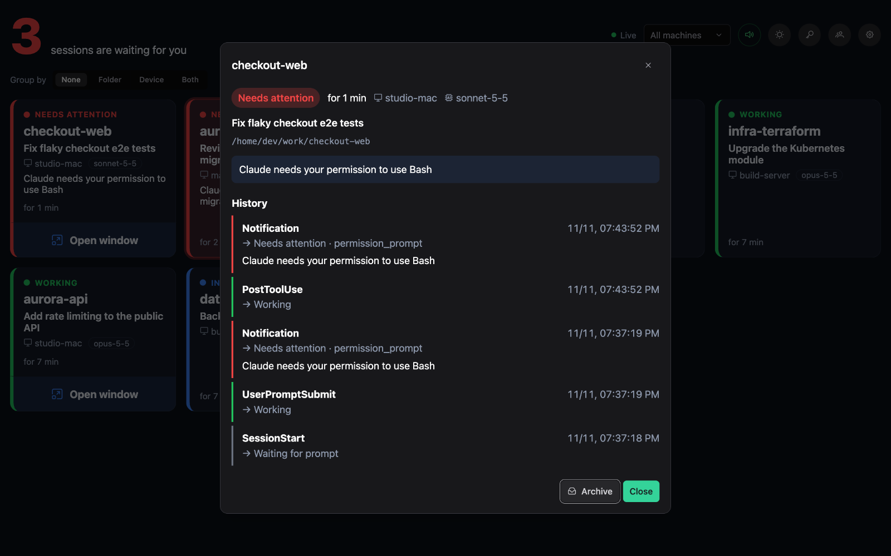
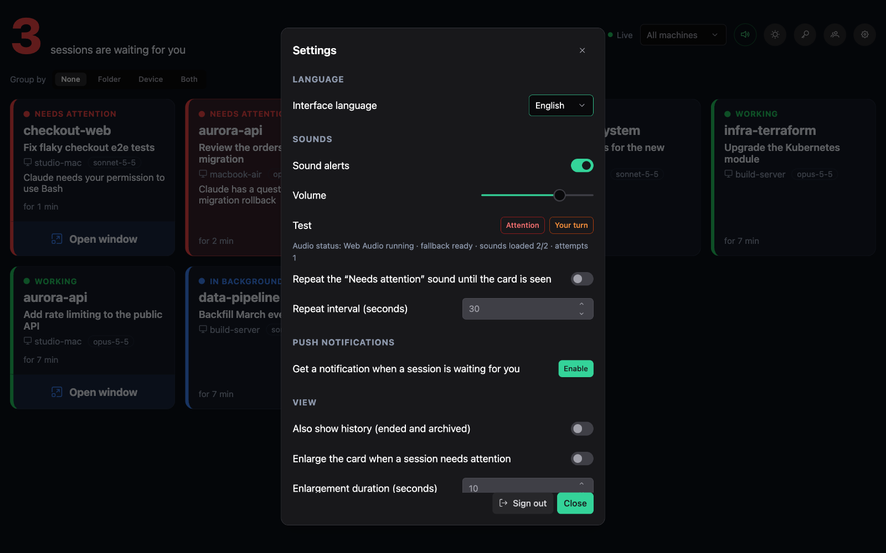
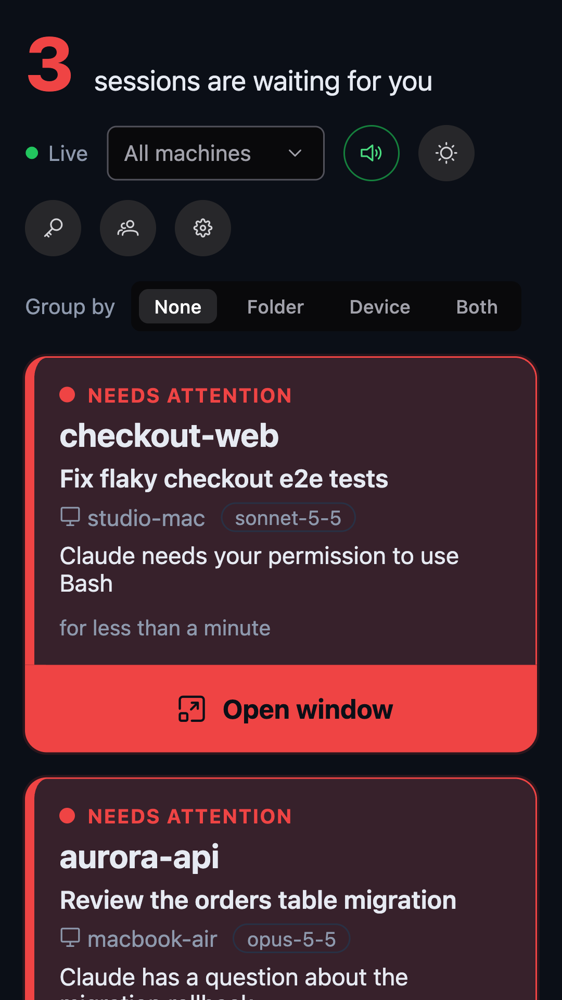

Every session, every machine
One card per session with state, folder, session name, machine, model and time in state, updated live.
Open source · Self-hosted · MIT
Claude Monitor shows the sessions running on all your machines on a single live board, and tells you — with a sound and a push notification — the moment Claude needs a permission or your reply.

Features
Built for people who run several Claude Code sessions at once, on more than one computer.
One card per session with state, folder, session name, machine, model and time in state, updated live.
Distinct sounds for “Needs attention” and “Your turn”, repeated until you look, and Web Push with the app closed.
Sessions with background tasks or scheduled wake-ups stay quiet until it is really your turn.
On macOS an optional agent brings the right terminal or the Claude app to the front, on the Mac you are using.
Prompts, answers and tool output are stripped before leaving your machine. Your server, your data.
Personal hook keys and devices for every user. Interface in English and Italian, easy to translate.
Session states
Claude Monitor turns the hook events of Claude Code into a clear state, and sorts the cards by urgency.
How it works
Create a key in the dashboard and run the generated script on each machine: it registers a small hook in the Claude Code settings.
The hook sends session events to your server, which maps them to a state and stores them in PostgreSQL.
Every open dashboard updates instantly; when a session needs you, your devices ring and get a notification.
Screenshots
Installable as an app, light and dark theme, readable from across the room.




Privacy and security
Claude Monitor only needs to know that something happened, not what you are working on.
Get started
You need Docker and an HTTPS address for the PWA and push notifications. The quick start covers keys, HTTPS and the iPad installation step by step.
# Clone and configure
git clone https://github.com/sartoriadelcodice/claude-monitor.git
cd claude-monitor && cp .env.example .env
# Push notification keys
scripts/generate-vapid-keys.sh
# Start the stack on http://localhost:8088
docker compose up -d --buildFAQ
No. Only event metadata is sent: event name, session id, folder name, machine, model, notification type and message.
Yes. The hook exists for Bash (macOS, Linux) and PowerShell (Windows). Only the optional window focus agent is macOS-only.
No. Claude Monitor never calls Anthropic services: it receives the events of the Claude Code hooks you install.
Yes, it is open source under the MIT license. PrimeNG, used by the interface, requires a free PrimeUI Community License key.
Star the project, report an issue, add a translation. Contributions are welcome.
Contribute on GitHub